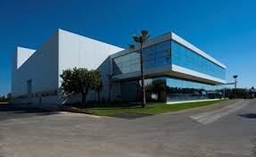
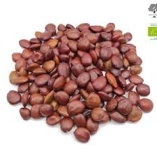
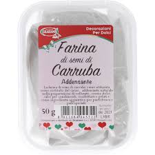

LBG Sicilia è un’azienda con sede a Ragusa specializzata nella produzione di ingredienti alimentari naturali, come la farina di semi di carrubo, proteine e fibre, utilizzati in gelati, prodotti lattiero-caseari, dolci, preparazioni vegane e alimenti senza glutine.
Fondata nel 2001 da Giovanni Carlo Licitra, l’azienda ha radici familiari che risalgono agli anni ’50 e oggi esporta in oltre 90 paesi, diventando uno dei principali produttori mondiali nel settore. I suoi prodotti sono naturali, privi di OGM, e l’azienda punta molto sulla ricerca e sull’innovazione per offrire ingredienti sicuri e funzionali.
La sostenibilità è un aspetto centrale: LBG Sicilia ottimizza i processi produttivi, riduce l’impatto ambientale e valorizza le risorse locali. L’azienda è anche attiva nel sociale, come dimostra la donazione di 25.000 euro al Comune di Ragusa durante la pandemia da COVID-19.
Il fondatore Giovanni Carlo Licitra ha trasformato un’attività familiare in una realtà internazionale, ricevendo riconoscimenti importanti per il suo contributo all’industria e alla comunità locale.